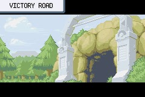
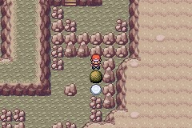
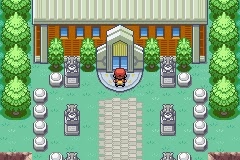

บทที่ 27 / 29
แชมเปี้ยนโรด<Victory Road>
❖
พอมาถึง จะต้องใช้ท่าHM04 พลักหินเข้าไปทับปุ่มสีขาวเพื่อเปิดทาง เพื่อไปทางต่อไป ตอนหลังอาจต้อง คำนวณนิดๆก่อนนะครับ พยายามอย่าผลักจนไปชิดกำแพง เพราะหากเลื่อนผิด1จุด จุดอื่นจะผลักทับไม่ได้ ถ้าเลื่อนพลาด ให้ขึ้นบันไดแล้วกลับลงมาแล้วทำใหม่ พอออกจากถ้ำแล้วจะถึงที่ราบสูงเซคิเอ


